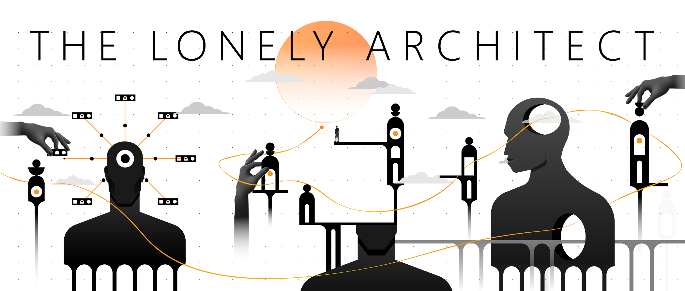
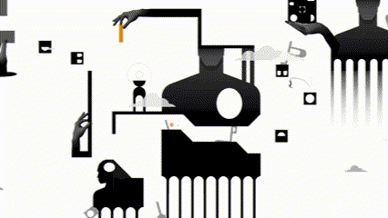

The Lonely Architect is a 2D atmospheric platformer set inside the subconscious of an isolated, overworked architect. What started as a demo that placed in the Top 25 for the 2024 ‘Safe In Our World’ Game Jam is now the debut title from solo developer Odaro Eguavoen (Ekosodi Games).
“I adore the abstract artwork and surrealist interpretation of the mind – visually this game really stands out! The puzzles were engaging and is certainly one I’d like to see developed further.”— SAFE IN OUR WORLD

Navigate eerie, minimalist landscapes shaped by isolation.
Be there when the doors open on Steam
Get an email when The Lonely Architect launches on Steam.